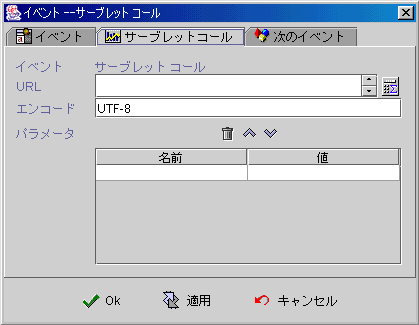

|

Servlet Call
アウトプットパラメーター
(output parameters)
Servlet コール (call Servlet)
リターンデータ
(return data)
Servlet
Call プロパティ (Servlet Call properties)
Servlet
サンプル (Servlet sample)
デザインナーは
Servlet Call でパラメーター (parameters) をカスタマイズ (customer)
の Java™
Servlet に伝達することができます。 Servlet は更に複雑な(advanced)
プロセスをし，或いは EJB (Enterprise Java Bean)をコールできます，その結果をクライアントに返送します。
Servlet
Call は拡張できるインタフェース (computing interface)
を提供する以外，各アプリ間のデータコミニケーション(data exchange and
communicate)にも使用できます 。
アウトプットパラメーター
(output parameters)
デザインナーは設定パラメーター名とフォーミュラ(formula)方式でパラメーターを Servletに送り込みます。jLIVE Builder™
の Content-Type が "application/x-www-form-urlencoded"
の形でパラメーターを伝達できます，デザインナーは必ず正確にパラメーターのエンコーディング(encoding)を設定しなければ，Servlet
は正確な情報が得られません。
▲Top
Servletコール (call Servlet)
カスタマイズ(customer)のJava Servlet
は HttpServlet クラス (class)
から継承でき，各種のアプリサーバー
(application server) に配置されることが可能です。Tomcatの場合，classes
或いはlib フォルダーの下に配置し，Tomcat
をリスタートすれば，サービスが立ち上がります。URLでServletをコールする時に，jLIVE Builder™
はフォーミュラで URL を組み立てますので， Servlet
ホスト名とIP 換える時も，正確にコール(call)ができます。例えば：サンプルの
Servlet は "Http://"$ApServerName()$":8080/servlet/ServletCallTest"
のフォーミュラで組まれた URL です。Servlet コールが成功できたかどうか，コネクション (connection)エラーの時に，エラーメッセージが表示されます。デザインナーはフォーミュラ GetServletResp("イベント名")で返送された値
( 1 -- 成功，0 --失敗)を確認し，Servlet 後のプログラミングを実行します。
▲Top
リターンデータ
(Return data)
Servletコールが成功にできた後に，デザインナーはフォーミュラ GetServletResp("イベント名.パラメーター名")を利用してリターンデータを読み込みます。jLIVE
Builder™ は"application/x-www-form-urlencoded"
の形で Servletに伝達します，リターンデータはServlet
中で
Properties class の形で返送されます，システムはキー (key)
値 (value)の形で Servlet
返送パラメーターリストに保存します。
▲Top
Servlet
Call プロパティ (Servlet Call properties)

▲Top
Servlet
サンプル (Servlet sample)
import javax.servlet.*;
import javax.servlet.http.*;
import java.io.*;
import java.util.*;
import javax.swing.*;
import java.net.*;
import java.util.zip.*;
import java.util.*;
import java.text.*;
import java.io.File;
import java.io.IOException;
public class ServletCallTest extends HttpServlet {
public void init(ServletConfig config) throws ServletException {
super.init(config);
}
public void doGet(HttpServletRequest req, HttpServletResponse
res) throws ServletException, IOException {
doPost(req, res);
}
public void doPost(HttpServletRequest req, HttpServletResponse
res) throws ServletException, IOException {
// Retrival parameters
int paramcount = 0;
Enumeration enum =
req.getParameterNames();
while(enum.hasMoreElements()) {
String name = (String)
enum.nextElement();
String[] values = (String[])
req.getParameterValues(name);
System.out.println(name);
if(values != null) {
for(int i = 0; i < values.length; ++i) {
System.out.println(values[i]);
++paramcount;
}
}
}
//use the Properties class to return data
Properties prop = new Properties();
prop.put("parameter_count",
String.valueOf(paramcount));
prop.put("test", "ok");
DataOutputStream out = new
DataOutputStream(res.getOutputStream());
prop.store(out, "");
out.flush();
out.close();
return;
}
public void destroy(){
super.destroy();
}
public String getServletInfo() {
return "Servlet Call Test";
}
}
|
▲Top
Copyright © 2001~
2004 Probe Technology Inc. . All Rights Reserved.
Questions, comments,
and suggestions to Service@probe.com.tw
|